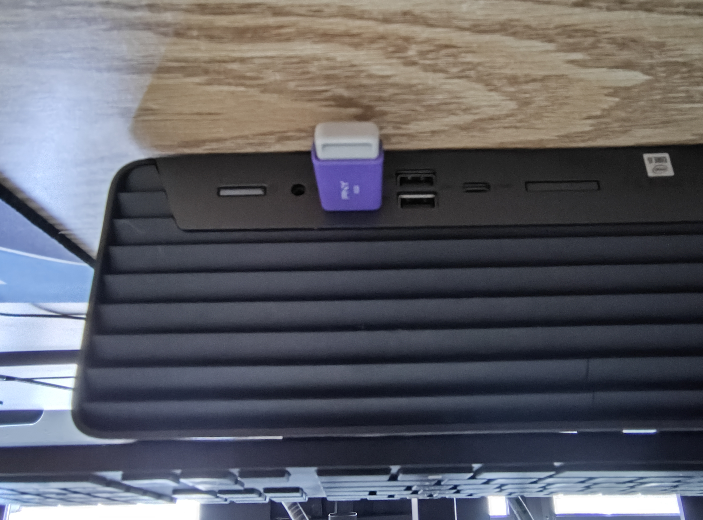

How to use your live Linux USB
Jun 20 2024
1) Find a computer. If your computer runs Arm, you'll need to find an ISO for your computer. If you don't know if it runs Arm, it probably does not. This also won't work with Apple Silicon Macs.

2) Make sure the device is off by checking the LED indicator.

3) Insert the USB drive into the computer.
4) Turn on the device, and rapidly press the F9 key* until the computer
manufacturer logo shows up on the screen.

5) You should now be in the boot menu. Use the arrow keys to move to the list item that says "USB", "flash drive", or the name of the USB manufacturer (eg. PNY, SanDisk).

6) Some distrubutions ("types" of linux) come with a screen that will let you choose how to boot, if yours does choose "test/try [distro name]" and press enter.

7) Wait until it boots up, then enjoy your new temporary Linux environment!


Everything you do locally on the device will be lost when the computer is turned off. about Linux and live USBs
* HP uses the F9 key for the boot mentu, if you are using another device look [computer manufacturer name] bios/boot menu key
Note: some distro need secure boot to be disabled for booting off a USB. I will mark this on the distro information page.